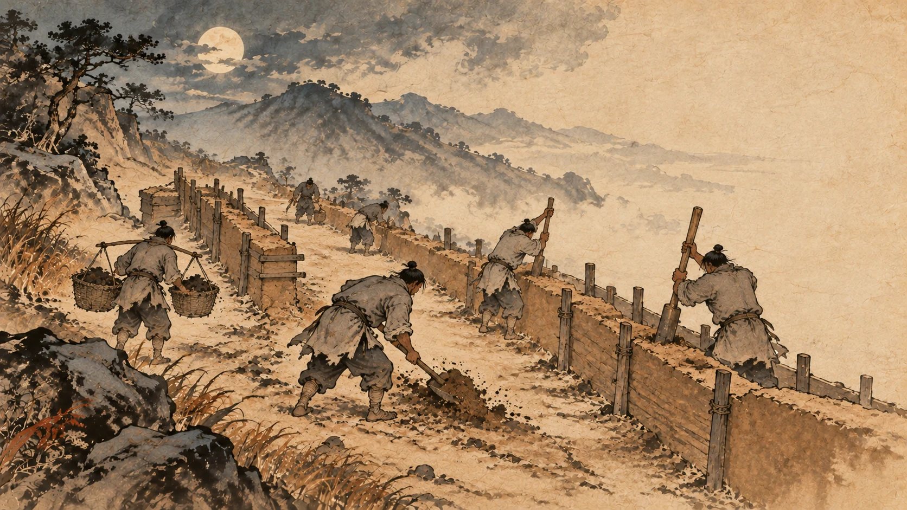
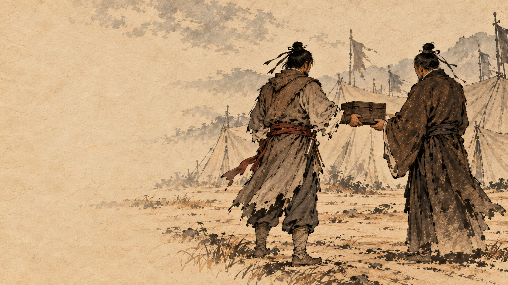
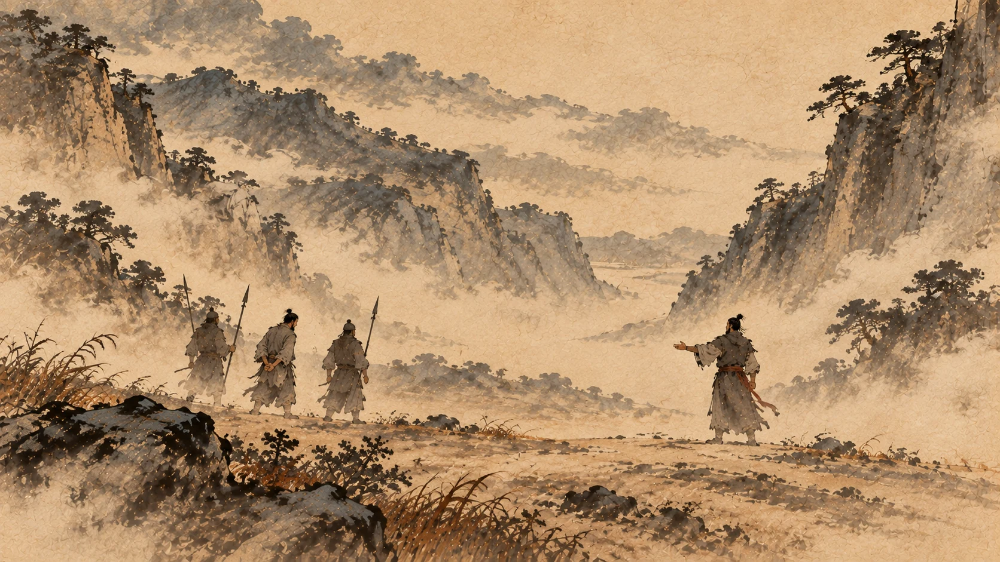
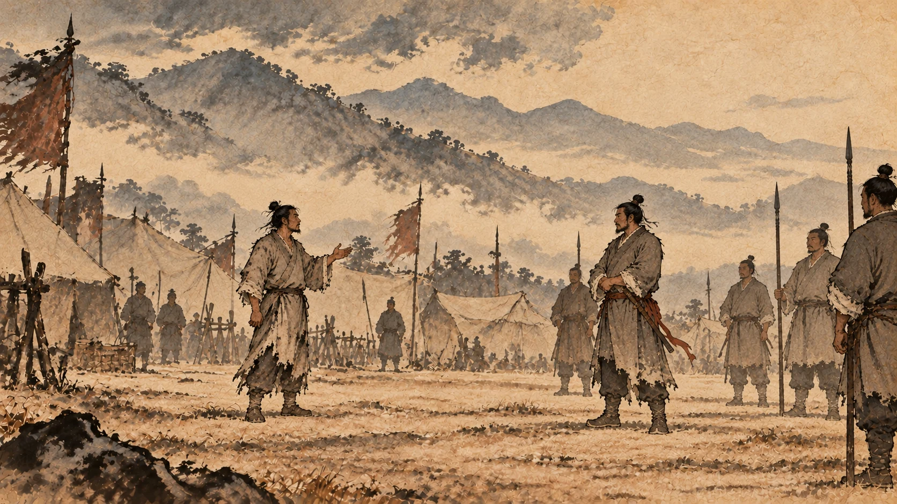
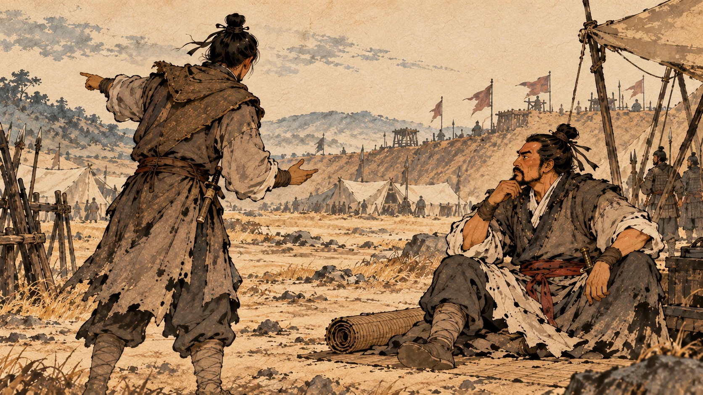
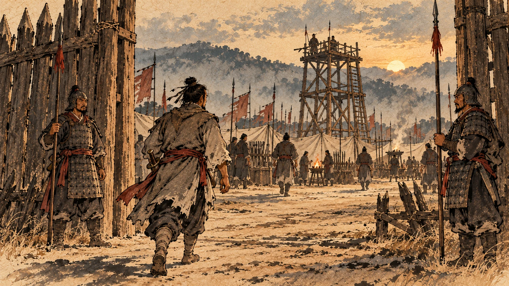
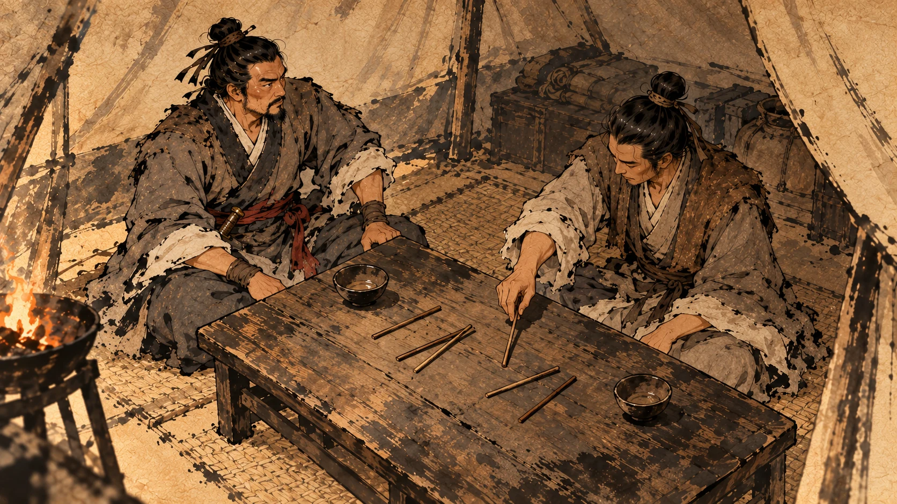
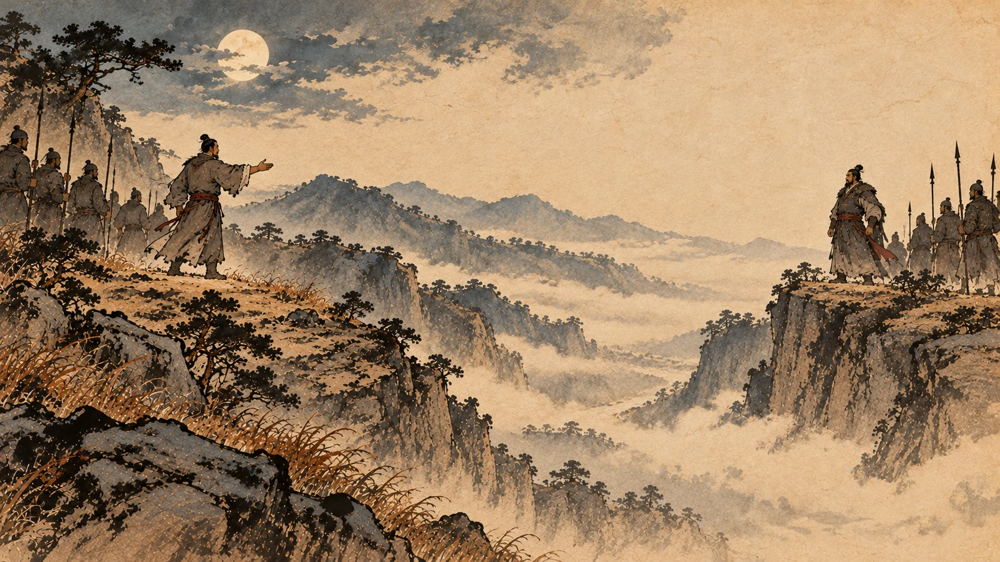
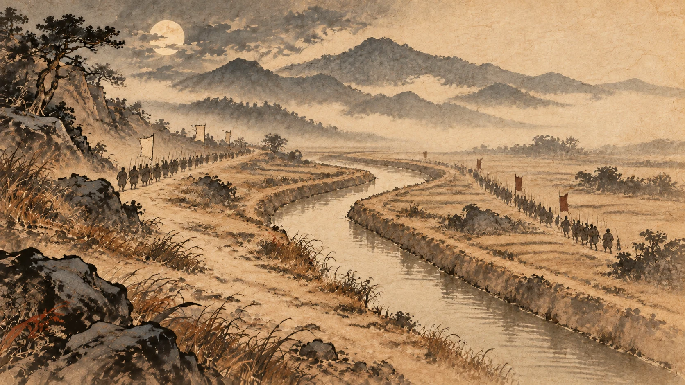

荥阳相持：熬
一、一条运粮的路

刘邦退到荥阳之后，做的第一件事是修路。
《史记》写：汉王军荥阳南，筑甬道属之河，以取敖仓。
刘邦驻军在荥阳南边，修了一条甬道通向黄河边，用来取敖仓的粮食。①
敖仓是秦朝在黄河边建的大粮仓。“甬道”就是两边筑墙的一条通道，粮车走在墙里面。
这条不起眼的路，是接下来一年多里最要紧的东西。刘邦所有的仗都建在它上面——有粮，他就能在那儿站着不动；没粮，他就得跑。
项羽看得很准。
《史记》写：与项羽相距岁馀。项羽数侵夺汉甬道，汉军乏食，遂围汉王。汉王请和，割荥阳以西者为汉。项王不听。
刘邦跟项羽相持一年多。项羽屡次袭夺刘邦的甬道，汉军缺粮，项羽于是把刘邦围了起来。刘邦请求讲和，条件是割荥阳以西归汉；项王不答应。②
“项王不听”这四个字，决定了后面好几年的走向。
刘邦当时是真的想停手。项羽不给他这个机会。
二、四万斤黄金

围城之下，刘邦开始用一件很不一样的东西。
《史记》写：汉王患之，乃用陈平之计，予陈平金四万斤，以间疏楚君臣。于是项羽乃疑亚父。
刘邦发愁，用了陈平的计策，交给陈平四万斤黄金，让他去离间楚国的君臣。于是项羽开始怀疑亚父范增。③
四万斤黄金。这个数字有多大不好换算，但《史记》对这笔钱还有一个说明：刘邦把钱交给陈平之后，不问去处。
不问去处。这句话比数字更值钱——刘邦知道自己买的是什么。
关于这笔钱怎么花的，《项羽本纪》里记了一个小场面：项羽的使者来了，刘邦的人先摆出最高规格的酒席，一看使者，装作吃惊，说我以为是亚父的使者，原来是项王的使者，然后把好菜端走，换成粗食。使者回去如实报告。
一个饭桌上的小动作。项羽就上当了。
范增的反应是愤怒，也是彻底失望。他说了一句放得下的话：
天下事大定矣，君王自为之。愿赐骸骨归卒伍。
天下的事大致定了，君王自己办吧。请让我把这把老骨头带回老家。④
项羽答应了。
然后《史记》写了他的结局：行未至彭城，疽发背而死。
还没走到彭城，背上生了个毒疮，死了。⑤
（《高祖本纪》记的是“未至彭城而死”，没说死因；《项羽本纪》写的是“疽发背而死”。两处都留给你。）
范增不是被项羽杀的，是自己气死的。而这个七十岁的老人，从第七章举玉玦开始，到这一年死在路上，从头到尾都在替项羽算同一件事：刘邦这个人，必须尽早解决。
三、替他去死的那个人

荥阳被围得越来越紧，粮断了。
刘邦要跑。他跑的办法，是这一整章里最让人说不出话的一段。
《史记》写：汉军绝食，乃夜出女子东门二千馀人，被甲，楚因四面击之。将军纪信乃乘王驾，诈为汉王，诳楚，楚皆呼万岁，之城东观，以故汉王得与数十骑出西门遁。
汉军断粮了，于是在夜里从东门放出两千多个女人，让她们穿上铠甲。楚军从四面围上来打。将军纪信乘着刘邦的车驾，冒充汉王，骗楚军，楚军都喊万岁，跑到城东去看——刘邦因此得以带着几十个骑兵从西门逃走。⑥
《项羽本纪》写得更细：纪信乘黄屋车，傅左纛，说了一句“城中食尽，汉王降”。
黄屋车是天子规格的车，左纛是车上的大旗。他坐着这辆车，出城去宣布投降。
楚军欢呼万岁，全跑到东门去看那个出来投降的汉王。
那两千多个穿铠甲的女人是什么，史料只写了这十几个字，我不加解释。你要的是事实，事实就是：她们被放出去，被杀死，用来把楚军的注意力引到东门。
而纪信的下场，《项羽本纪》写得也很短：项王见纪信，问：“汉王安在？”曰：“汉王已出矣。”项王烧杀纪信。⑦
项羽问他刘邦在哪儿。纪信说：汉王已经出去了。
项羽把他烧死了。
四、城里那个骂人的

刘邦走的时候，把荥阳交给了三个人守：御史大夫周苛、魏豹、枞公。⑧
这里要交代一笔魏豹是谁——他是魏国的宗室，曾经带着兵跟刘邦一起打项羽，后来反了刘邦，被韩信打下来抓了，成了一名降将。
周苛和枞公商量的时候，说了六个字：反国之王，难与守城。
一个反叛过的王，很难一起守城。
于是他们把魏豹杀了。⑨
这个判断其实是对的。魏豹在这座城里，是一颗随时会响的雷。他们两个替刘邦把雷拆了。
荥阳城破之后，周苛被活捉。
项羽对他开的价码非常高：为我将，我以公为上将军，封三万户。
你替我干，我让你做上将军，封三万户。⑩
（上将军，就是项羽自己当年的位子；三万户，是那个年代能给的最高的封赏之一。）
周苛的回答是一顿骂：
若不趣降汉，汉今虏若，若非汉敌也。
你不赶紧投降汉王，汉王就要把你俘虏了，你不是汉王的对手。⑪
项羽把他烹了，也杀了枞公。
项羽这一辈子开出过很多条件，被拒绝过很多次。但这一次，是被一个马上就要被扔进锅里的人当面骂的。
五、袁生的那一计

刘邦从荥阳跑出去之后，回关中收兵，想再往东打。
这时候有个人给他出了一计——这个人的名字叫袁生。他说：
汉与楚相距荥阳数岁，汉常困。愿君王出武关，项羽必引兵南走，王深壁，令荥阳成皋间且得休。使韩信等辑河北赵地，连燕齐，君王乃复走荥阳，未晚也。如此，则楚所备者多，力分，汉得休，复与之战，破楚必矣。
汉跟楚在荥阳相持了几年，汉总是被困。请大王南下出武关——项羽一定带兵往南追。大王深沟高垒不跟他打，让荥阳、成皋一带得到喘息。让韩信他们去收拾河北赵地，连上燕、齐。然后大王再回荥阳，也不算晚。这样楚要防的地方多了，力量就分散了；汉能休息，再跟他打，一定能破楚。⑫
刘邦听了。
这一计的精髓是什么？不跟项羽打。
项羽力气大、正面硬。那就让他跑：把他往南引，再往东调，让他不断地跑路。刘邦自己躲进墙里不出来。
从这一年起到战争结束，刘邦对付项羽的核心战法就是一个字——耗。
效果很快就来了。
刘邦南下宛、叶一带，项羽果然带兵南下来追。刘邦坚壁不出。而就在这时候，彭越渡过睢水，在下邳一带大破楚军。
项羽只好掉头去东边打彭越。刘邦又北上，回到成皋。
项羽打完彭越回来，发现刘邦又站住了，于是再往西，攻破荥阳，杀了周苛、枞公，俘虏了韩王信，把成皋围了起来。⑬
你看这个循环：刘邦往南躲，项羽往南追；彭越在东边闹，项羽往东回；刘邦又回成皋，项羽再往西打。
一年时间里，项羽就是在一条路上来回跑。他每一仗都赢，可每一次跑，他的兵就少一点，粮就紧一点。
六、他一个人进营把军队拿走了

成皋被围，刘邦又跑了。
《史记》写：汉王跳，独与滕公共车出成皋玉门，北渡河，驰宿脩武。
刘邦跑了，只跟夏侯婴两个人一辆车出成皋的玉门，北渡黄河，连夜赶到脩武。⑭
脩武是谁的驻地？张耳和韩信的。这两个人刚从北边打了几场胜仗，兵强马壮。
然后刘邦做了一件事：
自称使者，晨驰入张耳、韩信壁，而夺之军。
早上，他自称是汉王派来的使者，直接驰入张耳、韩信的营垒，把军队拿走了。⑮
他干这件事的时候，张耳和韩信大概还在睡觉。《史记》没有写他们醒来之后的反应，也没有写刘邦说了一句什么话。
但这件事本身说明了很多。
第一，刘邦对韩信从来没有完全放心；第二，这支军队在法律上是刘邦的，刘邦取回来连招呼都不用打；第三，刘邦现在的处境已经很急了——不然他不会半夜渡河来干这件事。
拿了军队之后，他重新振作起来。《史记》写：乃使张耳北益收兵赵地，使韩信东击齐。汉王得韩信军，则复振。
让张耳继续在北边收兵，让韩信往东去打齐；刘邦自己拿到这支军队，又立了起来。⑯
七、用筷子讲课

这一段是刘邦和郦食其之间的事，但真正的主角是张良。
郦食其给刘邦出了一个主意：恢复六国的后代，让他们各自立国。
他讲得很有道理：当年商汤伐夏桀，封了夏的后代；周武王伐商纣，封了商的后代。现在秦朝灭了六国、让六国的后人没有立锥之地。您要是恢复六国的后代，给他们印信，天下的君臣百姓都会感念您的德义，愿意做您的臣属——德义一立，您就可以南面称霸，楚国一定会乖乖来朝。
刘邦说：善。趣刻印，先生因行佩之矣。
好，快去刻印，先生您就带着印去。
印还没刻完，张良来了。刘邦正在吃饭，把郦食其这个主意跟张良说了一遍，问：于子房何如？
张良的回答是：谁为陛下画此计者？陛下事去矣。
这是谁替陛下出的主意？陛下的大事完了。
刘邦问：何哉？为什么？
张良说了一句：臣请藉前箸为大王筹之。
请让我借您面前的筷子，替大王您算一算。⑰
他拿刘邦吃饭的筷子当计算工具，一条一条地摆。
《史记》里记了他一连串的反问，每一条的格式都是当年商汤、周武能那么做，是因为他们有把握置对方于死地；陛下现在能吗？
——陛下能置项羽于死地吗？不能。
——陛下能进商汤、周武的坟墓去砍他们后代吗？不能。
——陛下能像周武那样分发商纣的粮食和财宝吗？不能。
——陛下能像周武那样刀枪入库、不再打仗吗？不能。
六条、七条、八条，刘邦每一次都答“不能”。
然后刘邦停下碗筷，把嘴里的饭吐出来，骂了一句：竖儒，几败而公事！
你个臭书生，差点坏了老子的大事！
《史记》紧接着写：令趣销印。下令赶紧把那些印销毁。⑱
这一段我特别喜欢，因为它把张良这个人的本事写透了。郦食其讲的不是胡说，那套“恢复六国”的逻辑在很多朝代都被用过。可张良把眼前这场仗的条件一条条摆开之后，那套逻辑立刻就不成立了。
同样一套道理，换个处境，就成了毒药。
八、广武那一次对话

荥阳、成皋、广武一线，两边又对峙下去。
《史记》用一句话写了当时天下人的处境：丁壮苦军旅，老弱罢转饟。
壮年人受够了打仗，老人孩子累死在运粮的路上。⑲
项羽想结束这件事。他提出一个办法：跟刘邦单独决斗。
刘邦没有答应。他做的是另一件事：数项羽的罪。
他一口气列了十条，从你违背怀王之约，把我封到蜀汉开始，到你派人暗中在江南杀掉义帝结束，最后说：
夫为人臣而弑其主，杀已降，为政不平，主约不信，天下所不容，大逆无道，罪十也。吾以义兵从诸侯诛残贼，使刑馀罪人击杀项羽，何苦乃与公挑战！
做臣子的杀了自己的君主，杀了已经投降的人，处理政事不公平，立了约又不守信，天下容不下你，这是大逆无道——第十条罪。我带着义兵跟着诸侯来诛杀残暴的人，让受过刑的罪人来打你就行了，我何必跟你单挑！⑳
这段话有一半是说给身边的人听的。“十罪”不是战场上的事，是政治上的事——他要把这场战争的性质讲清楚。
项羽听不懂这套。他的反应是：大怒，伏弩射中汉王。
他让人用暗藏的弩箭射刘邦，射中了。
然后《史记》写了一个细节：
汉王伤匈，乃扪足曰：“虏中吾指！”
刘邦胸口受了伤，却捂着脚说：这奴才射中了我的脚趾！㉑
“伤匈”是伤在胸口，“扪足”是捂着脚。这不叫镇定，这叫表演——他当着自己几万士兵的面，把重伤说成了轻伤。
然后张良硬请他起来，到军营里走一圈。刘邦就出来巡行部队，伤势很重，巡完赶紧驰回成皋。㉒
他不能倒下，因为这时候他一倒，那支军队就可能散。
九、两个人都打不动了

熬到这一年，两边都到了极限。
项羽那边也撑不住了。于是有了那件事：
项羽恐，乃与汉王约，中分天下，割鸿沟而西者为汉，鸿沟而东者为楚。项王归汉王父母妻子，军中皆呼万岁。
项羽害怕了，跟刘邦订约，中分天下：鸿沟以西归汉，鸿沟以东归楚。项王把刘邦的父母妻子送回来，军中齐呼万岁。㉓
鸿沟是一条水渠的名字，它后来成了一个词——“鸿沟”，分割的意思就是这么来的。
刘邦的父亲和妻子，这时候已经在项羽手里两年多了。他们被送回来的时候，全军欢呼。
到这儿，故事看起来可以结束了：天下分了，人质回来了，两个人各回各家。
项羽就往东走了。
刘邦也想往西走。
张良和陈平把他拦住了。
下一章：韩信北伐——从西河到齐地。